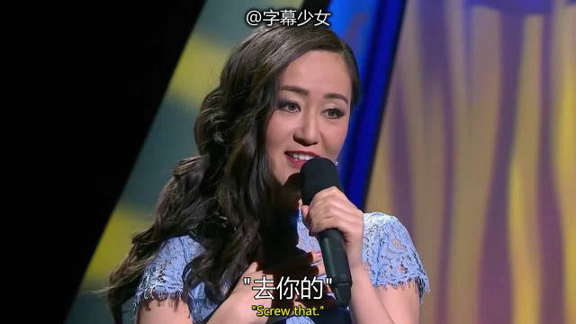

原来不止中国的英语外教有wsn形象，日本的英语外教也是。 //@yaksa9://@haibaraemily:妈耶，这妹子有意思！原来发音不标准，说话慢吞吞，也依然可以把英语说的这么有张力啊佩服佩服@字幕少女:樱花妹Yumi Nagashima说她搬到加拿大以后，常常被猥琐白人男搭讪要不要一起去吃寿司？对于这种无知的设定，她果断回怼：“那你要不要去日本教英语？”2333333棒呆了 字幕少女的微博视频  103万次播放 02:42